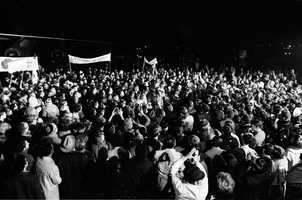

12/29/1968SearchApollo 8 Crew Arrives in Houston: Although it was past 2 a.m., a crew of more than 2,000 people were on hand at Ellington Air Force Base to welcome the members of the Apollo 8 crew back home. Astronauts Frank Borman, James A. Lovell Jr., and William A. Anders had just flown to Houston from the pacific recovery area by way of Hawaii. The three crewmen of the historic Apollo 8 lunar orbit mission are standing at the microphones in center of picture. (NASA on The Commons)